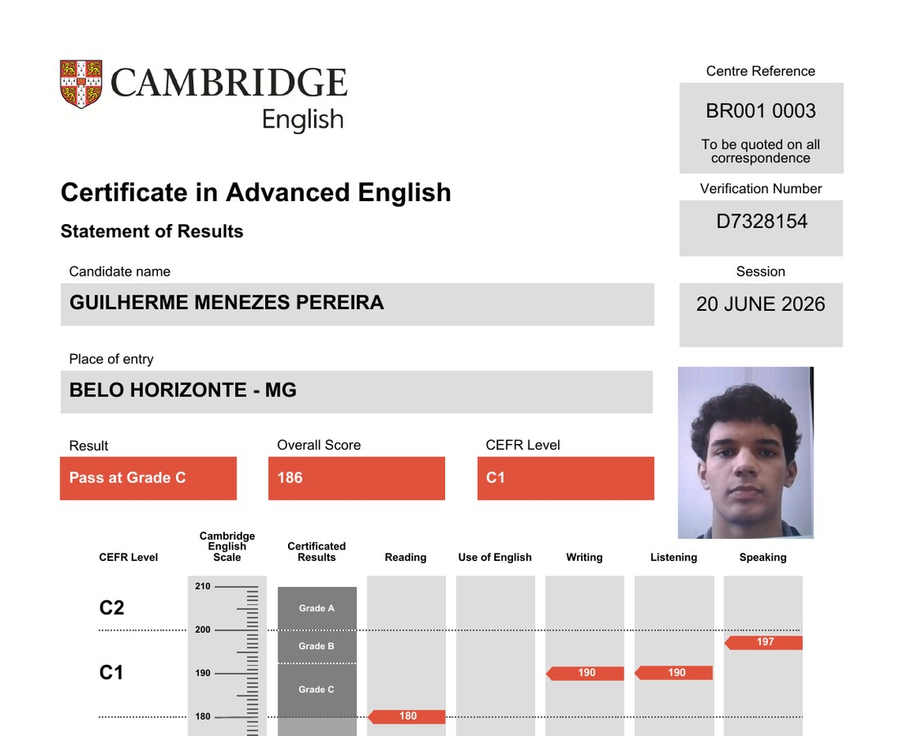
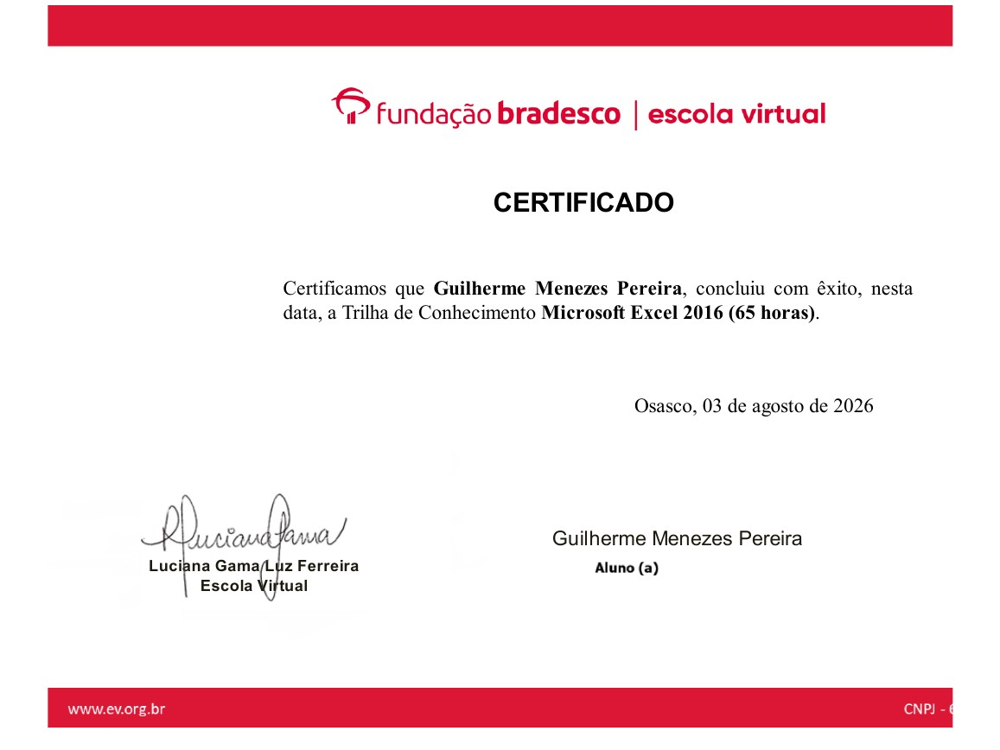
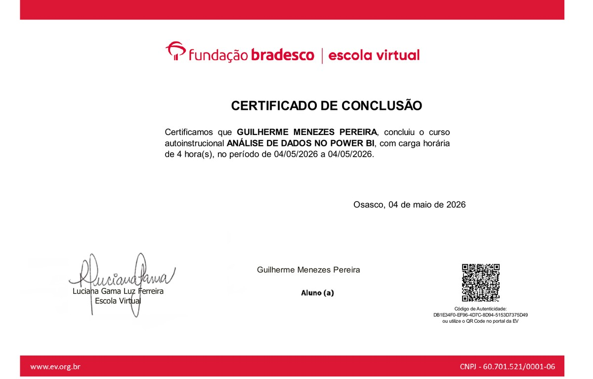
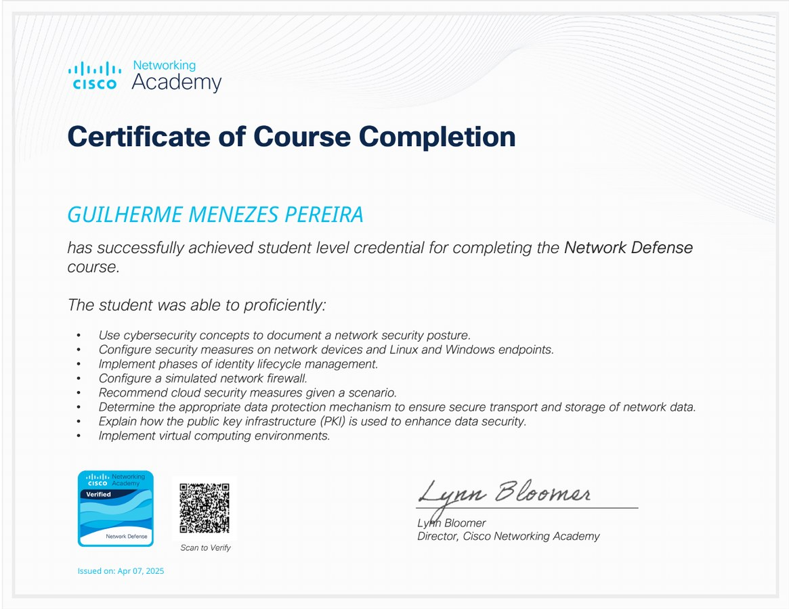
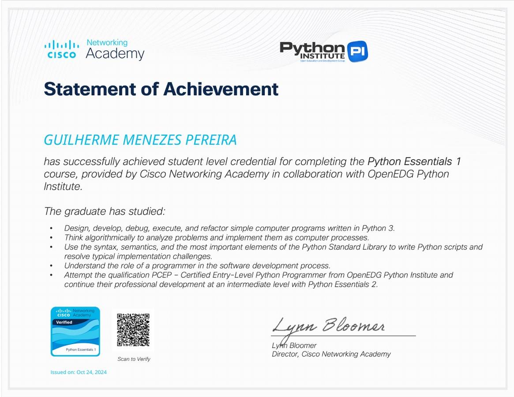
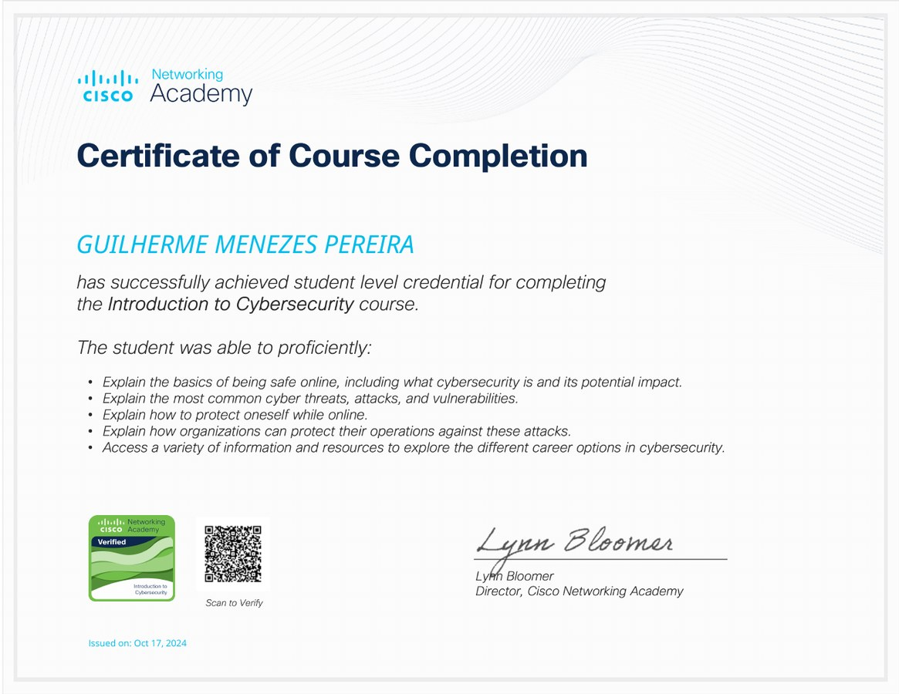
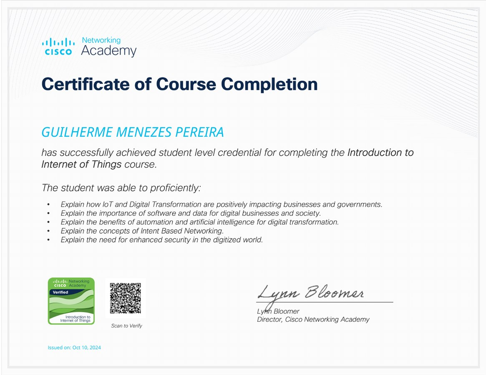
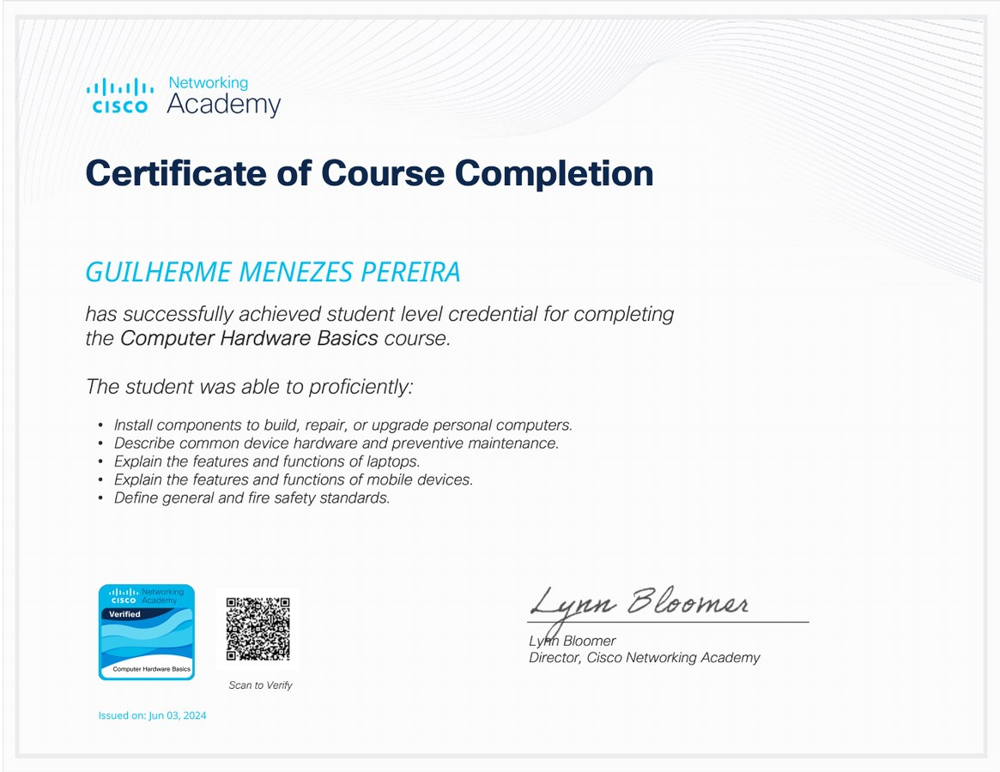
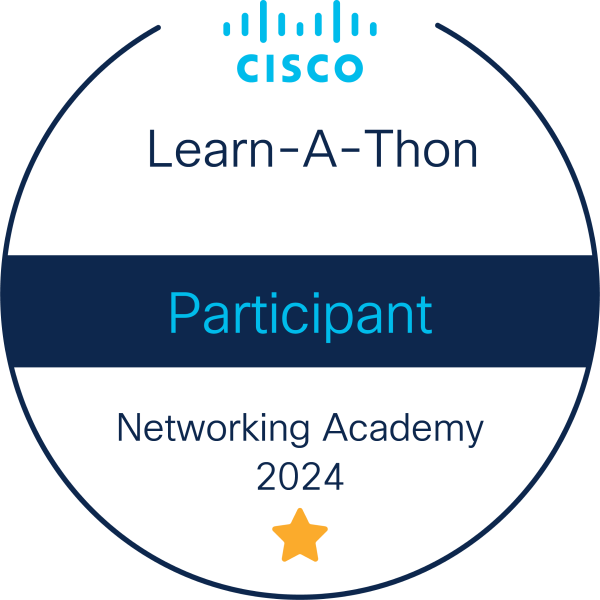
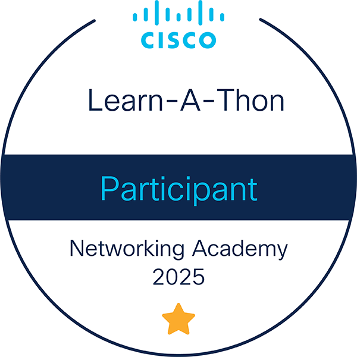

Formação
Certificados e insígnias.
Certificados

Trilha Microsoft Excel 2016

Análise de Dados no Power BI

Network Defense

Python Essentials 1

Introduction to Cybersecurity

Introduction to IoT

Computer Hardware Basics
Insígnias

Learn-A-Thon 2024

